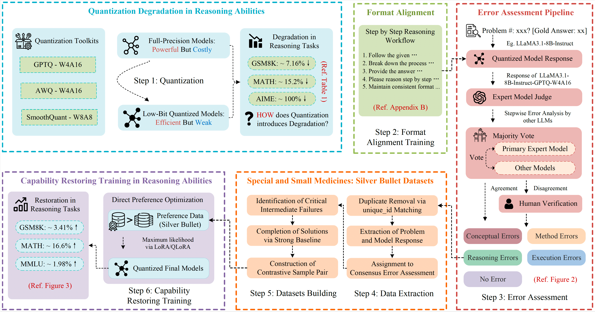

|
First-year Ph.D. StudentDepartment of Computing, The Hong Kong Polytechnic University |
About Me [back top]
I am currently a first-year Ph.D student in The Hong Kong Polytechnic University, fortunately supervised by Prof. Hongxia Yang at PolyU and Prof. Wenguang Chen at Tsinghua University. Earlier, I obtained my master degree at University of Science and Technology of China (USTC), supervised by Prof. Yong Wang.
My research interests are to develop efficient AI Infra and AI System. Recently, I focus on develop low-resource training and inference algorithms for Large Language Models (LLMs).
I am actively looking for academic collaboration, fell free to contact me if you are interested.
Latest News [back top]
- [2025.05]: We release InfiJanice: Joint Analysis and In-situ Correction Engine for Quantization-Induced Math Degradation in Large Language Models .
- [2025.02]: We release Quantization Meets Reasoning: Exploring LLM Low-Bit Quantization Degradation for Mathematical Reasoning .
- [2025.02]: We release InfiR : Crafting Effective Small Language Models and Multimodal Small Language Models in Reasoning .
- [2025.01] Start the PHD journal at PolyU
- [2024.07]: Join Tencent IEG as a Algorithm Engineer
- [2024.06]: Awarded the Outstanding Graduate Student at USTC
- [2023.06]: Join Ant Group NextEVO as a AI Infra Engineer Intern
Selected Publications [back top]
Publications
|  | Zhen Li, Yupeng Su, Songmiao Wang, Runming Yang, Congkai Xie, Aofan Liu, Ming Li, Jiannong Cao, Yuan Xie, Ngai Wong✉, Hongxia Yang✉
InfiJanice: Joint Analysis and In-situ Correction Engine for Quantization-Induced Math Degradation in Large Language Models [arXiv] |
Industrial Experience [back top]
- Algorithm Engineer, Tencent Interactive Entertainment Group (IEG), 2024.07 - 2024.11
- AI Infra Engineer (Intern), Ant Group NextEVO Research Center, 2023.06 - 2024.04
- Algorithm Engineer Intern, AMD Xilinx DeePhi, 2022.10 - 2024.05
- Research Intern, iFlytek Technology Research Institute, 2022.06 - 2022.09
Major Awards [back top]
- Outstanding Graduate Student, University of Science and Technology of China, 2024
- 1st‑Class Academic Scholarship, University of Science and Technology of China, 2021-2023
Teaching [back top]
- Teaching Assistant, ML4432 – Machine Learning, PolyU, 2025 Spring
- Teaching Assistant, CONT010177 – Modern Control Theory, USTC, 2022 Fall
Academic Service [back top]
- Reviewer of NeruIPS, AAAI, ICLR, ACL